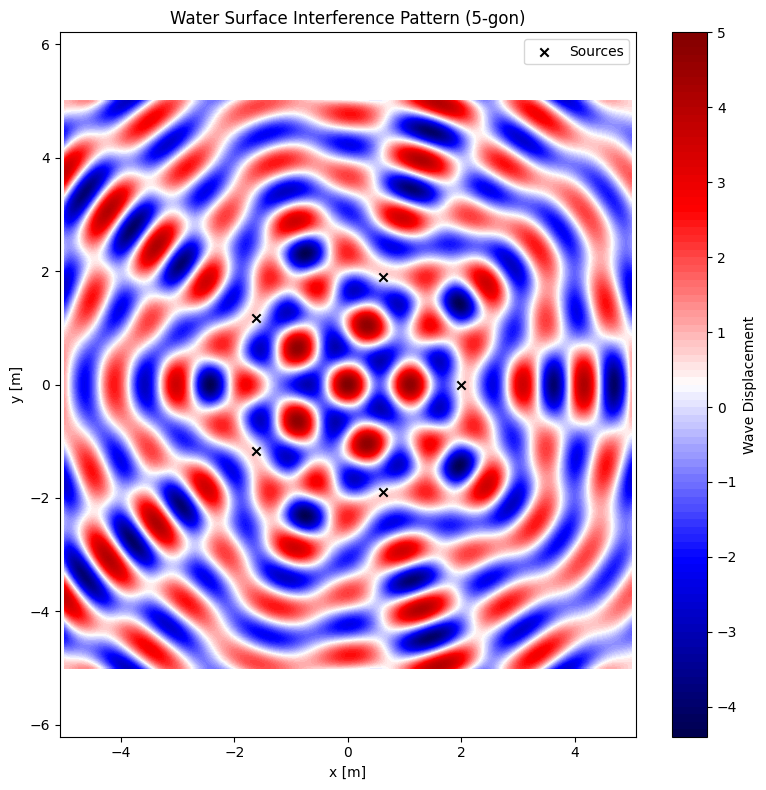

Problem 1
🌊 Interference Patterns on a Water Surface
🎯 Motivation
Interference patterns from multiple wave sources on a water surface reveal core principles of wave physics — especially how waves reinforce or cancel each other. This project simulates the interference of circular waves from point sources placed at the vertices of a regular polygon and visualizes their complex overlapping patterns.
📐 Task Summary
- Select a regular polygon (e.g., square).
- Place point wave sources at its vertices.
- Model each wave as a circular sinusoidal wave.
- Apply the superposition principle to simulate interference.
- Visualize the pattern of constructive and destructive interference.
🧮 Theoretical Background
Single Wave Disturbance
A circular wave from a point source at $$ \vec{r}_0 $$ is:
Where:
- $$ A $$ is the amplitude
- $$ k = \frac{2\pi}{\lambda} $$ is the wave number
- $$ omega = 2\pi f $$is the angular frequency
- $$ r = |\vec{r} - \vec{r}_0| $$ is distance to the observation point
- $$ \phi $$ is the phase offset
Superposition Principle
For $$ N $$ sources:
🐍 Python Code for Square Interference
```python
import numpy as np
import matplotlib.pyplot as plt
# Parameters
A = 1 # amplitude
wavelength = 1.0 # in meters
frequency = 1.0 # in Hz
k = 2 * np.pi / wavelength
omega = 2 * np.pi * frequency
t = 0 # snapshot in time
# Regular polygon parameters
N_sources = 5 # Change this to 3 (triangle), 4 (square), 6 (hexagon), etc.
radius = 2.0 # Distance from center to each source
# Grid for plotting
x = np.linspace(-5, 5, 500)
y = np.linspace(-5, 5, 500)
X, Y = np.meshgrid(x, y)
# Calculate positions of sources
angles = np.linspace(0, 2 * np.pi, N_sources, endpoint=False)
source_positions = [(radius * np.cos(a), radius * np.sin(a)) for a in angles]
# Initialize total wave
eta_total = np.zeros_like(X)
# Superposition of waves from all sources
for sx, sy in source_positions:
R = np.sqrt((X - sx)**2 + (Y - sy)**2)
R[R == 0] = 1e-6 # prevent division by zero
eta_total += A * np.cos(k * R - omega * t)
# Plotting
plt.figure(figsize=(8, 8))
plt.contourf(X, Y, eta_total, levels=100, cmap='seismic')
plt.colorbar(label='Wave Displacement')
plt.scatter(*zip(*source_positions), color='black', marker='x', label='Sources')
plt.title(f'Water Surface Interference Pattern ({N_sources}-gon)')
plt.xlabel('x [m]')
plt.ylabel('y [m]')
plt.axis('equal')
plt.legend()
plt.grid(False)
plt.tight_layout()
plt.show()

📈 Interpretation
-
Blue (0.5× circular velocity):
The payload follows an elliptical suborbital trajectory and eventually reenters Earth's atmosphere. -
Green (1.0× circular velocity):
The payload maintains a stable circular orbit around Earth. This is the ideal velocity for low Earth orbit (LEO). -
Red (1.2× circular velocity):
The payload exceeds escape velocity, following a hyperbolic trajectory, and escapes Earth's gravitational influence.
🚀 Conclusion
This simulation demonstrates how a payload's initial speed determines its fate:
- Speeds below orbital velocity result in reentry or crash.
- Speeds equal to orbital velocity yield sustained orbit.
- Speeds above escape velocity lead to departure from Earth’s gravity.
Understanding these dynamics is crucial for mission planning, satellite deployment, and interplanetary exploration.